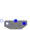

MultiTerminalBoxTerminal box Y/D-connection |

|
Diagram
{kind=link}
Information
This information is part of the Modelica Standard Library maintained by the Modelica Association.
This model represents the internal connections of the terminal box of an electric machine.
The parameter terminalConnection is used to switch between star
(terminalConnection = "Y") and delta (terminalConnection = "D") connection.
The star point is a plug with
mSystem = Electrical.Polyphase.Functions.numberOfSymmetricBaseSystems(m) phases,
representing the star points of each base system; see
Modelica.Magnetic.FundamentalWave.UsersGuide.Polyphase.
Parameters (4)
| m |
Value: 3 Type: Integer Description: Number of phases |
|---|---|
| mSystems |
Value: Modelica.Electrical.Polyphase.Functions.numberOfSymmetricBaseSystems(m) Type: Integer Description: Number of symmetric base systems |
| mBasic |
Value: integer(m / mSystems) Type: Integer Description: Number of phases of basic system |
| terminalConnection |
Value: Type: String Description: Choose "Y" for star or "D" for delta connection |
Connectors (4)
| plug_sp |
Type: PositivePlug Description: To be connected with positive stator plug |
|
|---|---|---|
| plug_sn |
Type: NegativePlug Description: To be connected with negative stator plug |
|
| plugSupply |
Type: PositivePlug Description: To be connected with grid |
|
| starpoint |
Type: NegativePlug Description: Star point |
Components (2)
| multiStar |
Type: MultiStar |
|
|---|---|---|
| multiDelta |
Type: MultiDelta |
Used in Examples (9)
|
Modelica.Electrical.PowerConverters.Examples.ACAC Soft start of an induction machine |
|
|
Modelica.Magnetic.QuasiStatic.FundamentalWave.Examples.BasicMachines.InductionMachines Induction machine with squirrel cage started directly on line (DOL) |
|
|
Modelica.Magnetic.QuasiStatic.FundamentalWave.Examples.BasicMachines.InductionMachines Induction machine with squirrel cage and inverter driving a conveyor |
|
|
Modelica.Magnetic.QuasiStatic.FundamentalWave.Examples.BasicMachines.InductionMachines Steady-state initialization of induction machine with squirrel cage |
|
|
Modelica.Magnetic.QuasiStatic.FundamentalWave.Examples.BasicMachines.InductionMachines Starting of induction machine with slip rings |
|
|
Modelica.Magnetic.QuasiStatic.FundamentalWave.Examples.BasicMachines.SynchronousMachines Permanent magnet synchronous machine operated at mains with step torque load |
|
|
Modelica.Magnetic.QuasiStatic.FundamentalWave.Examples.BasicMachines.SynchronousMachines Test example: PermanentMagnetSynchronousMachine fed by current source |
|
|
Modelica.Magnetic.QuasiStatic.FundamentalWave.Examples.BasicMachines.SynchronousMachines Electrical excited synchronous machine operating as generator |
|
|
Modelica.Magnetic.QuasiStatic.FundamentalWave.Examples.BasicMachines.SynchronousMachines Test example: Synchronous reluctance machine fed by current source |